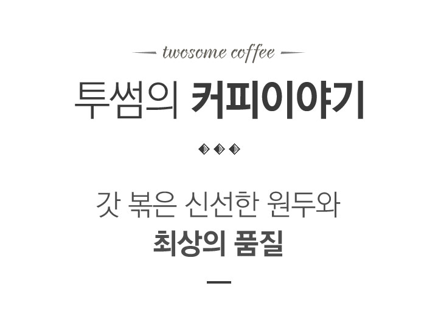
투썸 커피는 고품질 생두를 엄선하여
블렌딩하고 정통 유럽식 Deep Roasting의
기술력을 바탕으로 국내에서 갓 볶은
신선한 원두와 최상의 품질로 투썸 고유의
커피 풍미를 전해드립니다.
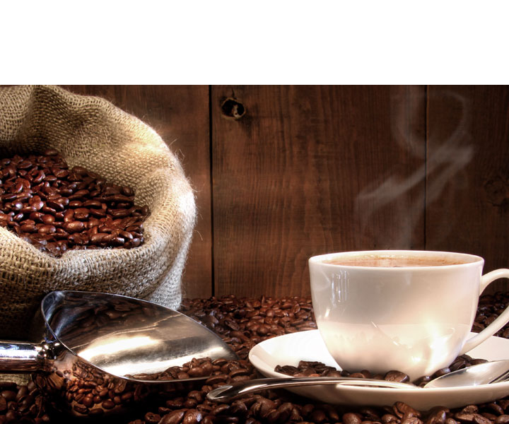
중남미의 아라비카 100% 원두만을
사용하여 첫 맛의 초콜렛티한 맛과,
후미에서 느껴지는 스모키한 플레이버를
중심으로 입안 가득 긴 여운(After Taste)을
느낄 수 있는 것이 특징입니다.
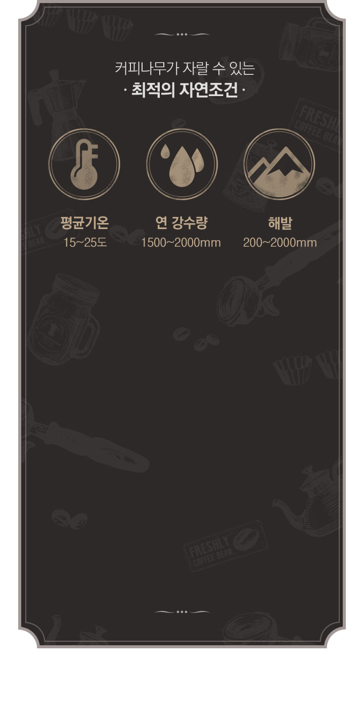
지구를 넓게 펼쳐놓은 지도에서
적도를 중심으로 북회귀선과 남회귀선을
따라 넓게 가로지르는 지역이
위와 같은 자연조건에 해당하는데 마치 지구를
두르는 띠 같아서 커피벨트라고 부릅니다.
이 커피 벨트에 속하는 아프리카, 중남미,
아시아 지역에서 생산된 각종 커피 원두는
전세계 생산량의 대부분을 차지하고,
그 중에서도 중남미는 커피 생육에
가장 알맞은 기후와 조건을
가지고 있어 고품질의 원두가 재배되며
세계 생산량의 1위인 브라질이 위치해 있습니다.

Dark Roasting과 Deep Roasting에
적합한 중남미의 고품질 생두만을 사용하여
다크 로스팅의 고온에서도
깨지지 않고 균일한 품질을 유지합니다.
-
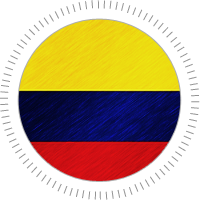
- 전문 넛트향의 풍미와
입 안을 채우는 듯한
중후함이 느껴지는 커피
- 전문 넛트향의 풍미와
-
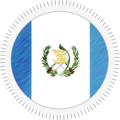
- 스모키한 향과
중후한 바디가
잘 나타나는 커피
- 스모키한 향과
-
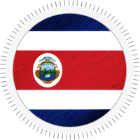
- 밝은 산미와
부드러운 풍미를
느낄 수 있는 커피
- 밝은 산미와
-
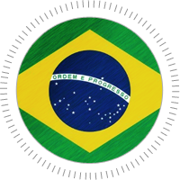
- 중성적인 풍미에
고른 밸런스를
갖춘 커피
- 중성적인 풍미에
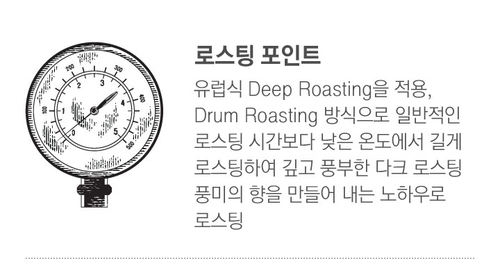

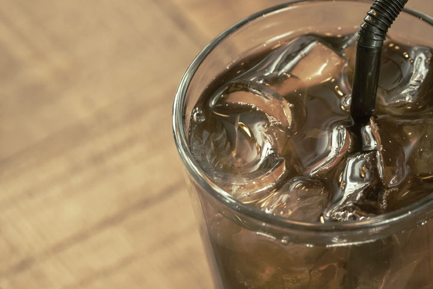
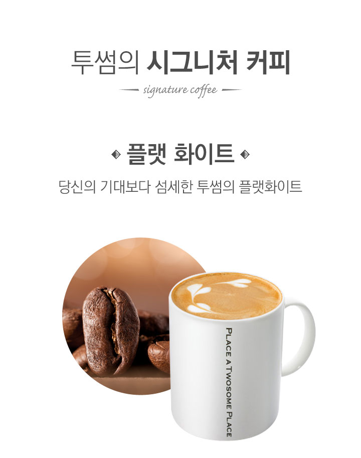
에스프레소보다 추출시간이 5초정도짧고 20ml의 적은 양으로 추출한 리스트레또 투샷을 넣고 부드러운 벨벳 밀크폼을 3mm로 얇게 올려 라떼보다 깊은 풍미와 바디감을 느낄 수 있는 투썸의 시그니처 라떼
- 플랫 화이트의 유래
- 1980년대 중반 호주의 음식 역사학자 마이클시몬스가에스프레소에 우유를 섞은 것에서 유래 되었고, 이후뉴질랜드에서 발전되어 영국등 유럽으로 수출되었습니다.
- 진한 커피의 향과 맛
- 투샷(Two shot)의 에스프레소에 60~70도의 스팀우유를 부어 만드는 커피로 카푸치노와 라떼와 다소 비슷하지만, 전체 음료양이 적고 우유 대비 커피비율이 높으면서 벨벳같은 윤기가 나는 아주 고운 얇은 우유 거품이 있어 진한 커피의 향과 맛을 느낄 수 있습니다.
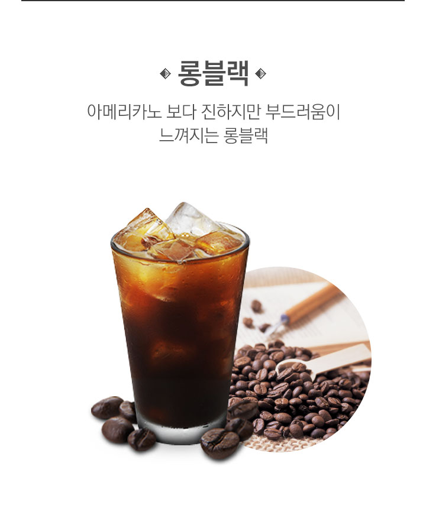
에스프레소보다 추출시간이 짧고 20ml의 적은 양으로추출한 리스트레또 투 샷을 넣고 아메리카노보다 진하고 부드러운 커피 플레이버를 느낄 수 있는 투썸의시그니처 커피
- 롱블랙 커피
- 롱블랙(Long black)은 커피의 한 종류로, 호주와 뉴질랜드를 시작으로 최근 영국등 유럽에서 주로 마시며,적은 양의 물에 에스프레소 투 샷을 넣어 만드는 커피입니다.
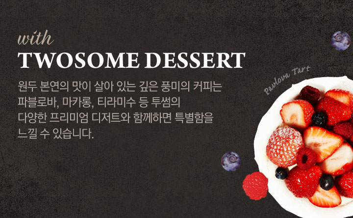